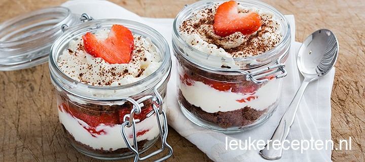
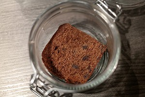
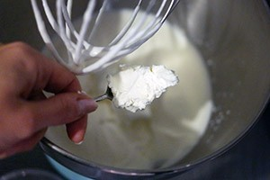
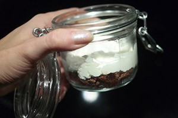
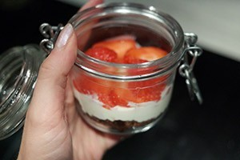

Chocolade aardbeien trifle

* 25 MINUTEN ,, 2 PERSONEN *
Super simpel maar heerlijk toetje voor valentijnsdag: laagjes chocoladecake, room en aardbeien in een glaasje.
Ingrediënten :
- 4 plakken chocolade cake (zelfgemaakt of gekocht)
- Handje aardbeien, ca 10 stuks
- 125 ml slagroom
- 3 eetlepels mascarpone
- 1 eetlepel suiker
- Chocolade om te bestrooien.
Bereidingswijze :
- Neem 2 glazen.
- Klop de slagroom stijf met de suiker.
- Voeg de laatste 30 sec de mascarpone toe en klop tot een egale room.
- Snijd de plakken cake op maat van het glas en verdeel een plak op de bodem van het glas.
- Schep een laagje room, ongeveer even hoog als de cake in het glas.
- 
- Snijd de aardbeien in plakjes en verdeel over de room (houd een paar plakjes achter voor de decoratie).
- Leg weer een plak cake in het glas op de aardbeien en schep weer wat room er op.
- Decoreer de bovenzijde met een plakje aardbeien in de vorm van een hartje en wat chocoladerasp.
- Serveer direct of bewaar in de koelkast max 1 dag).
Tip: vervang de aardbeien ook eens door frambozen.